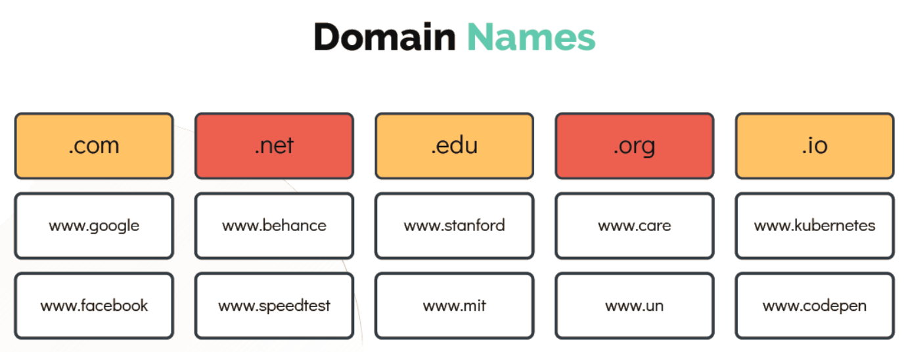
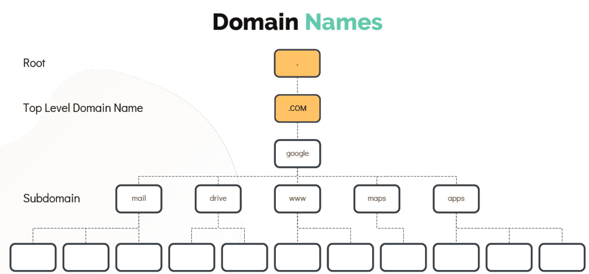
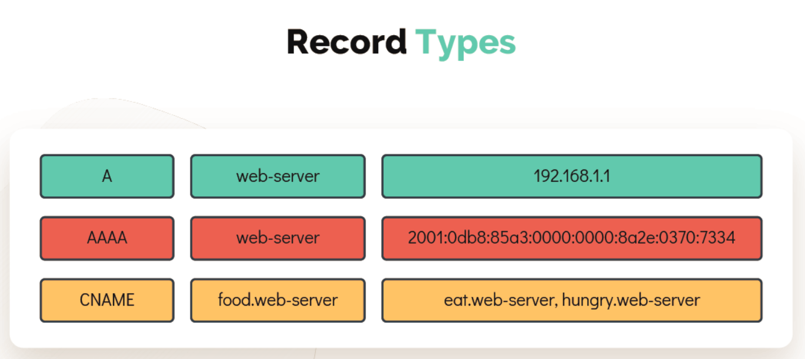

DNS
- The domain name system is a distributed way to share these name-to-IP associations instead of requiring each computer to synchronize a hosts file. A name server publishes the IP address for a domain and provides a single location to update when an IP changes.
#### Ping
-
PingCommand is use to check the remote machine is reachable or not.[~]$ ping 192.168.1.11 Reply from 192.168.1.11: bytes=32 time=4ms TTL=117 Reply from 192.168.1.11: bytes=32 time=4ms TTL=117 -
To
Pingthe remote host with a name instead ofIP Addressmake an entry in/etc/hostsfile[~]$ cat >> /etc/hosts 192.168.1.11 db[~]$ ping db PING db (192.168.1.11) 56(84) bytes of data. 64 bytes from db (192.168.1.11): icmp_seq=1 ttl=64 time=0.052 ms 64 bytes from db (192.168.1.11): icmp_seq=2 ttl=64 time=0.079 ms- You can configure as many hosts you want in the/etc/hostsfile.[~]$ cat >> /etc/hosts 192.168.1.10 web 192.168.1.11 db 192.168.1.12 nfs 192.168.1.20 web 192.168.1.21 db-1 192.168.1.22 nfs-1 192.168.1.30 web-1 192.168.1.31 db-2 192.168.1.32 nfs-2 192.168.1.40 web-2 192.168.1.41 sql 192.168.1.42 web-5 192.168.1.50 web-test 192.168.1.61 db-prod 192.168.1.52 nfs-4 192.168.1.60 web-3 192.168.1.61 db-test 192.168.1.62 nfs-prod -
Every host has a DNS resolution file
/etc/resolv.conf[~]$ cat /etc/resolv.conf nameserver 192.168.1.100 -
The
/etc/nsswitch.conffile is used to configure which services are to be used to determine information such as hostnames, password files, and group files.There is a specific search order according to which it is performed. This order is set in this configuration file.[~]$ cat /etc/nsswitch.conf … hosts: files dns …
DOMAIN NAMES

- .com - Commerical or General Purpose.
- .net - Network or General Purpose.
- .edu - Education Purpose
- .org - Organizations for non profit organizations etc.

RECORD TYPES

- A - IP to host names.
- AAAA - Storing ipv6 to hostnames.
-
CNAME - Mapping one name to another.
-
To test the DNS resolution you can use
nslookupcommand, this will query a hostname from a DNS Server.
[~]$ nslookup www.google.com
Server: 8.8.8.8
Address: 8.8.8.8#53
Non-authoritative answer:
Name: www.google.com
Address: 172.217.0.132
- Another useful tool to query a hostname from a DNS server is
digwhich return more detailed information as shown.
[~]$ dig www.google.com
; <<>> DiG 9.10.3-P4-Ubuntu <<>> www.google.com
;; global options: +cmd
;; Got answer:
;; ->>HEADER<<- opcode: QUERY, status: NOERROR, id: 28065
;; flags: qr rd ra; QUERY: 1, ANSWER: 6, AUTHORITY: 0, ADDITIONAL: 1
;; OPT PSEUDOSECTION:
; EDNS: version: 0, flags:; udp: 512
;; QUESTION SECTION:
;www.google.com. IN A
;; ANSWER SECTION:
www.google.com. 245 IN A 64.233.177.103
www.google.com. 245 IN A 64.233.177.105
www.google.com. 245 IN A 64.233.177.147
www.google.com. 245 IN A 64.233.177.106
www.google.com. 245 IN A 64.233.177.104
www.google.com. 245 IN A 64.233.177.99
;; Query time: 5 msec
;; SERVER: 8.8.8.8#53(8.8.8.8)
;; WHEN: Sun Mar 24 04:34:33 UTC 2019
;; MSG SIZE rcvd: 139